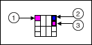

The command line interface for LabVIEW supports the following operations:
MassCompile�Mass compiles the files in the specified directory.
ExecuteBuildSpec�Builds an application or a library using the settings in the specified build specification(s) and returns the path of the output files.
RunVI�Runs a VI with the predefined connector pane interface and returns the output or error information.
(VI Analyzer Toolkit)�RunVIAnalyzer�Runs the specified VI analyzer task in the LabVIEW VI Analyzer Toolkit and saves the test report to the specified location.
(Unit Test Framework Toolkit)�RunUnitTests�Runs tests on the specified files in the LabVIEW Unit Test Framework Toolkit and saves the JUnit file to the specified location.
The following table lists the available arguments of this operation. Required arguments are in bold.
Argument
Description
Default
−DirectoryToCompile
Location of the VIs to compile.
�
−MassCompileLogFile
File path of the log results.
Path to the temporary location
−AppendToMassCompileLog
A Boolean that specifies whether to add the results to the log file.
false�If the log file you specify already exists, LabVIEW overwrites the existing log file.
−NumOfVIsToCache
Number of VIs allowed in memory during the mass compile.
Note��Caching VIs can significantly decrease the execution time of a mass compile because LabVIEW does not have to load cached VIs when you compile a top-level VI. However, VI caching consumes more system memory. If you mass compile a folder that contains VIs with the same name in different subfolders and the VIs do not belong to a library, VI caching may cause cross-linking.
0
−ReloadLVSBs
A Boolean that specifies whether to ignore CINs in VIs and allow the application to search for them. This argument is useful when a large number of CINs have been recompiled and need to be reloaded.
false
To run this operation in the CLI for LabVIEW, execute a command using the following syntax:
LabVIEWCLI -OperationName MassCompile -DirectoryToCompile <directory of file(s)> -MassCompileLogFile <path to log file> -AppendToMassCompileLog <true or false> -NumOfVIsToCache <number of VIs to cache> -ReloadLVSBs <true or false>
For example, LabVIEWCLI -OperationName MassCompile -DirectoryToCompile "C:\temp" -MassCompileLogFile "C:\temp\log.txt" -AppendToMassCompileLog true -NumOfVIsToCache 0 -ReloadLVSBs false.
ExecuteBuildSpec
Builds an application or a library using the settings in the specified build specification(s) and returns the path of the output files.
The following table lists the available arguments of this operation. Required arguments are in bold.
Argument
Description
Default
−ProjectPath
Path to the LabVIEW project (.lvproj) file that contains the build specification.
�
−TargetName
Target that contains the build specification.
My Computer
−BuildSpecName
Name of the build specification that appears under Build Specifications in the Project Explorer window.
Empty string�The CLI for LabVIEW builds all build specifications under the specified target.
To run this operation in the CLI for LabVIEW, execute a command with the following syntax:
LabVIEWCLI -OperationName ExecuteBuildSpec -ProjectPath <path to project> -TargetName <name of target> -BuildSpecName <name of build specification>
For example, LabVIEWCLI -OperationName ExecuteBuildSpec -ProjectPath "C:\temp\test.lvproj" -TargetName "My Computer" -BuildSpecName "My DLL".
RunVI
Runs a VI with the following connector pane interface and returns the output or error information.

Terminal
Data Type
Description
Command line arguments for the VI.
CLI for LabVIEW exit code that the VI returns.
Output or error information to include in the CLI for LabVIEW console or log file.
The following table lists the available arguments of this operation. Required arguments are in bold.
Argument
Description
Default
−VIPath
Path to the VI to run in LabVIEW. If the connector pane of the VI does not match the predefined interface, the CLI for LabVIEW returns an error.
�
<Command line arguments for the VI>
Elements of the input array of the VI. Separate elements with spaces.
�
To run this operation in the CLI for LabVIEW, execute a command with the following syntax:
LabVIEWCLI�-OperationName RunVI -VIPath <VI path> <first element of array> <second element of array>...
For example, LabVIEWCLI�-OperationName RunVI -VIPath "C:\Users\inlabview.APAC\Documents\DemoProject\RunVI.vi" 101 202.
CloseLabVIEW
Closes LabVIEW without any prompts.
Note��Any unsaved changes will be lost if a VI is open when you run this operation. Make sure you save all your changes before running this operation.
This operation does not have any arguments.
To run this operation in the CLI for LabVIEW, execute the following command:
LabVIEWCLI -OperationName CloseLabVIEW
(VI Analyzer Toolkit)�RunVIAnalyzer
Runs the specified VI analyzer task in the LabVIEW VI Analyzer Toolkit and saves the test report to the specified location.
The following table lists the available arguments of this operation. Required arguments are in bold.
Argument
Description
Default
−ConfigPath
Path to the configuration file that contains VI Analyzer task settings to use in the analysis. You can use a configuration file you saved through the VI Analyzer or the VI Analyzer VIs. Alternatively, you can specify a VI, folder, or LLB to analyze. If you specify an item other than a configuration file, the VI runs all VI Analyzer tests on the specified item.
�
−ReportPath
Path to the report or results file.
�
−ConfigPassword
Password of the configuration file, if any.
Empty string
−ReportSaveType
Format of the report or results file. The value for this argument must be one of the following:
ASCII
HTML
RSL File
Note��This argument is case sensitive.
ASCII
To run this operation in the CLI for LabVIEW, execute a command with the following syntax:
LabVIEWCLI -OperationName RunVIAnalyzer -ConfigPath <path to configuration file> -ReportPath <path to report> -ReportSaveType <file type of report> -ConfigPassword <password of configuration file>
For example, LabVIEWCLI -OperationName RunVIAnalyzer -ConfigPath "C:\temp\test.viancfg" -ReportPath "C:\temp\output.html" -ReportSaveType "HTML" -ConfigPassword "abc".
(Unit Test Framework Toolkit)�RunUnitTests
Runs tests on the specified files in the LabVIEW Unit Test Framework Toolkit and saves the JUnit file to the specified location.